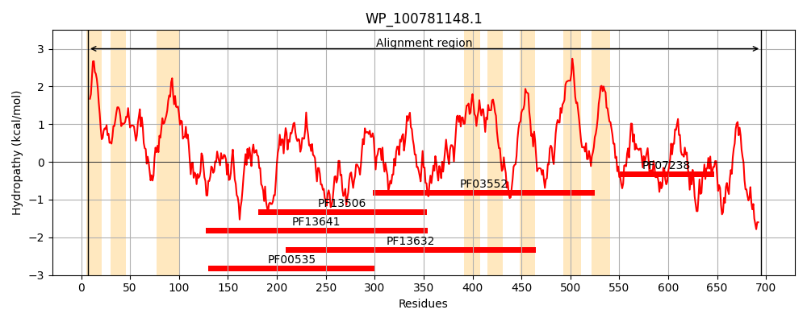
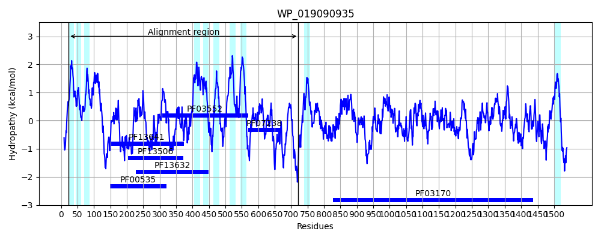
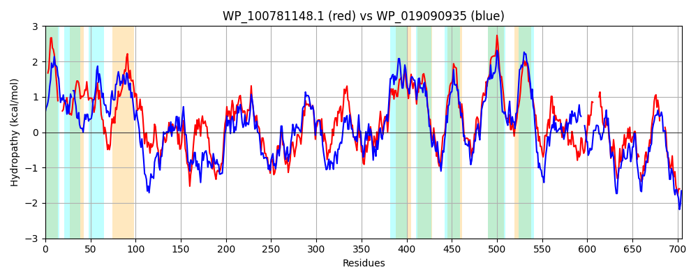

Hit Accession: WP_019090935
Hit TCID: 4.D.3.1.13
Hit Description: gnl|BL_ORD_ID|20902 gnl|TC-DB|WP_019090935|4.D.3.1.13 cellulose synthase catalytic subunit (UDP-forming) [Komagataeibacter europaeus]
Mach Len: 705
e:0.000000
Query TMS Count : 8
Hit TMS Count: 10
TMS-Overlap Score: 5.500000
Predicted Substrates:CHEBI:3529;(1->4)-beta-D-glucan
BLAST Alignment:
Score: 1613 , Bit scores: 625 bits, E-value: 0.0e+00, Alignment length: 705, Percentage identity: 47
Query: 7 WLLALVLSPVAVLVV----ITPMDSQKQYIFGLLSIGILFLMGFSKRRSVSVIMVVTSLLMSTRYMYFRLTQTLHFNSSIEAILGMGLFLAEVYIWVMLLLNYLQTVWPLKRGIVPLPDDMSKWPTVDIYIPSYNEPLEVVRDTVLAAQCIDYPKDKMKIYLLDDGKRSEFAVFAADVGVGYITRNDNKHAKAGNLNHALTLTHGELICVFDCDHVATRVFLQATVGGFLKDPMLALVQTPHYFYSPDPFERNLSVGRNIPNEGMLFYGPIQQGNDNWNATFFCGSCAVIRREALAQIGGFAVETVTEDAHTALKFQRLGWKSAFLDIPLAAGLATERLVVHVIQRTRWARGMTQIFRVDNPLFGRGLTFQQRLCYLSAMLYYQFALPRVVFVTAPLAYLLFNLNIIYSSASLIVSYALPHLFLAIYVGSRMNGRYRYSFWGEIYDIVLAFHLVLPTLVTMIFPKRGKFNVTDKGGLLDVGYFDFTVVRPHLVVACLLALGVVVGIVRAIGHDYFGSDPNVIALNVGWGIYSLIFLLAAIAVARETRQVRKTIRIDVDIPMVIHYASGIVSRSHTADLSMGGCRVAAPDMRHLEDDIEEIELILQSG------AISIPAQLVTSDERFLRLKFDEDIPLSRRRELVRVVLARADAWIN-PPRPQDNPFRSFFTILRCVFEL-----FWLTWKTRRSQRSRTAVAK 695
WL+ +L+ A L + IT +Q+ YI + +I + F + K R V+ I+++ SL +S RY+ +RL T+ F ++ I+ + L LAE Y L L+Y Q WPL R LPD+ WP VD+Y+PSYNE LE+VR TVL A + +P DK+ +Y+LDDG+R F FA + G GYI R++N HAKAGNLNHA+ +T GE + +FDCDHV TR FL T+G + DP LAL+QTPH+FYSPDPF+RNL+ G ++P EG +FYG +Q GND W+ATFFCGSCA IRR AL +GGFA ETVTEDAHTALK QR GW +A+L PLA GLATERL++H+ QR RWARGM QI R+DNP+ G GL ++QRLCYLSAM ++ FA+PRV+F+ +PL +L F NII +S I+ YALPH+F +I SR+ GR+RYSFW EIY+ LA L+ T+VT++ P +GKFNVTDKGGLL GYFDF+ V P++++A +L G+V GI+ I + LN W SLI +LA+IAV RETRQ+R R+ V +P+ + +A G +HT D+S+GG V LE ++++LQ +++PA ++ +L L++ + L + R++V V R+DAW N D P S + +++ + L W + S+ S +V K
Sbjct: 23 WLVCFLLAGGAFLCLSVGDITLAPAQQAYI-SIGTISLFFFLNRRKGRHVTCILMMLSLFVSFRYLIWRLGSTVQFTGLLQIIMSVSLLLAEGYALSTLCLSYFQMSWPLGRKPHNLPDNPDDWPVVDVYVPSYNEDLELVRSTVLGALDLHWPADKLNVYILDDGRRKSFYDFAKESGAGYIIRSENNHAKAGNLNHAMKITRGEFVVIFDCDHVPTRSFLLKTIGWMVADPKLALLQTPHHFYSPDPFQRNLAAGYDVPPEGNMFYGLVQDGNDFWDATFFCGSCAAIRRSALLSVGGFATETVTEDAHTALKMQRKGWGTAYLRQPLAGGLATERLILHIGQRVRWARGMLQIMRLDNPMLGGGLRWEQRLCYLSAMSHFLFAIPRVIFLVSPLGFLFFGQNIIAASPFAIMVYALPHIFHSIMTLSRIEGRWRYSFWSEIYETSLALFLIRITIVTLLQPHKGKFNVTDKGGLLARGYFDFSAVYPNVIMALVLFAGMVRGILGMIFQYHQKLAFQSFVLNTLWITISLIVVLASIAVGRETRQIRHKPRVRVKLPVEVCFADGASYHAHTTDISLGGAGVTLNLPMQLE---TPMDIVLQYSKPDDGIRVAVPATILGQRGSWLHLQWKNE-TLEQERQIVSFVFGRSDAWHNWADFKDDRPLNSIYQVIKSIGGLLSPPYLWDLSPAQESEESDESVHK 722 | Protein Hydropathy Plots: |
|---|
|  |  |
Pairwise Alignment-Hydropathy Plot:
|
|---|
|  |